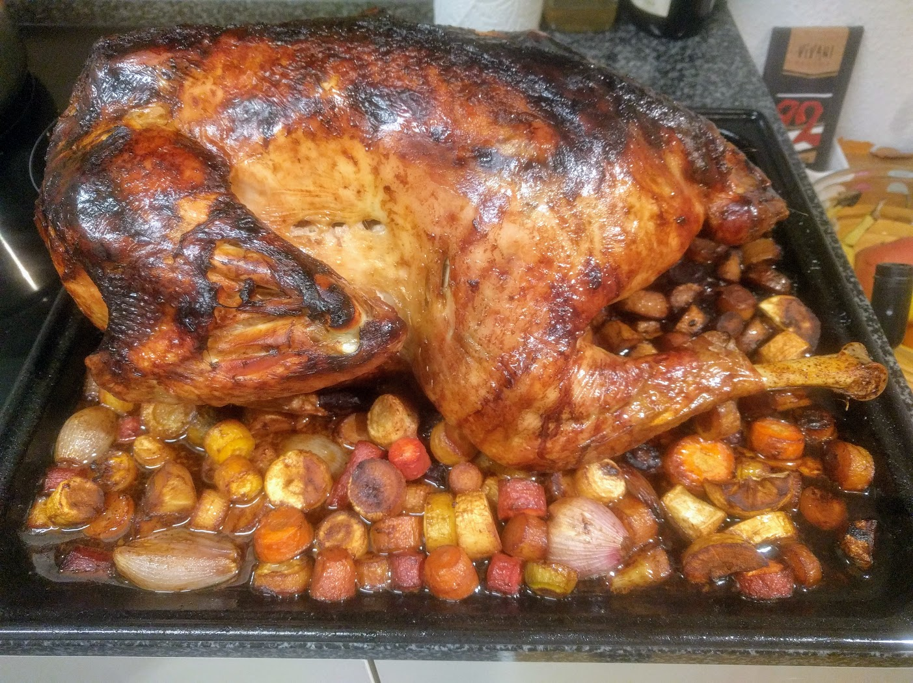

..@..♦.D.

|
Présentation 
|
Blog
|
Recettes
|

Pour une dizaine de personnes :
Remarque 1 : si on veut la farcir (ce qui est une bonne idée), sauf contre-indication, ajouter la farce au début de la cuisson à 180°C.
Remarque 2 : on peut la badigeonner de beurre au début si on veut, mais avec la marinade et le repos dans le frigo, c'est pas nécessaire (la peau va spontanément devenir craquante et délicieuse).
Remarque 3 : on peut bien entendu rajouter des trucs sur la plaque de cuisson à partir du moment où on la fait cuire à 180°C ; par exemple des échalotes entières épluchées ou des champignons.